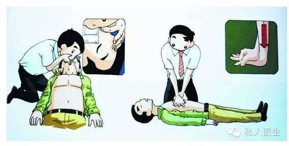

6月29日，常德市临澧县司法局副局长赵君（47岁）路遇车祸，连救三人之后猝死。
6月29日，广州市红十字会医院急诊科主任李晶（43岁）突然在家中晕倒，因心脏疾病不幸逝世。
7月3日青岛海牛队的塞尔维亚外援格兰·戈基奇 (29岁），训练结束后心源性猝死。这几天的报纸、新闻、朋友圈都是各种猝死的消息。这些消息无一不让我们扼腕叹息。猝死到底是个什么东西，今天就由私人医生为大家解读猝死的一些知识。
无论是国内还是国外的研究均发现，中青年是猝死的高发年龄。所以猝死让人痛惜。
猝死多数不是在医院，家中最常见。所以指望医生救命是不可能的。
四季中，冬季和炎夏是猝死的高发期；一周中，星期天容易发生猝死；一日中，早上6～10时是高发期。天气骤寒或骤热时，医院的病人就会骤增。冬季天气冷，血管突然收缩，就容易发生猝死。同理，夏天特别炎热的时候，也容易引发心脑血管意外而猝死。
星期天也会猝死高发？星期日是休息日，人们生活节奏会有所改变，对老人家来说，平日规律的生活可能被孩子孙儿的回家而打乱，容易导致神经兴奋，从而引起血压升高，心律加快，容易发生猝死。而星期六、星期三是次危险期。
每日的6～10时也是猝死高峰，原因可能与激素水平的下降、神经过度兴奋，引起心律失常有关。在这个时间段要提防情绪波动所引发的悲剧。请看中国死因分类饼图：冠心病引起的心源性猝死占首位。
预防心源性猝死有四道防线，这四道防线只要有一道防线不失守，就不会发生心源性猝死。斑块的全称是动脉粥样斑块，是存在于动脉血管壁上的脂肪团。可以说冠状动脉内的斑块是不定时炸弹，一旦斑块破裂，就会立即在相应的血管内激发凝血功能，几乎在瞬间形成血栓，将冠脉的某分支堵塞，导致心脏突发缺血，即急性冠脉综合征，使患者处在危急关头。故防止斑块形成是从根本上预防猝死的最佳途径。
科学的生活方式，包括科学饮食、坚持运动、摒弃恶习（最重要的就是戒烟）等，还要控制三高（高血压、高血脂及高血糖），通过上述做法多数情况下能有效地防止和延缓斑块的形成和发展。如果第一道防线不幸失守，患者冠脉上有了斑块，注意防护第二道防线——防止斑块破裂。只要斑块不破裂，就不会发生冠脉综合征，多数情况下也就不会发生心源性猝死。
主要预防措施是：在科学的生活方式的基础上加上调脂药物，还应定期去医院检查。调脂药物通常是带有“他汀”这两个字的药物，如氟伐他汀、辛伐他汀、阿托伐他汀等。这些药物可以起到稳定斑块，防止斑块破裂的作用，应在正规医生的指导下应用。
患者的斑块破裂了，发生了急性冠脉综合征，还有第三道防线——防止室颤发生。室颤是心脏停搏的一种类型，是心脏急性缺血时出现的恶性心律失常，一旦发生室颤，患者的心脏失去了泵血功能，血液循环停止，患者此时已是九死一生。故发生急性冠脉综合征后预防室颤的发生极其重要。
主要预防措施：
静：指发病后患者要安静、镇静及冷静。冠脉综合征发生时，患者的心肌极度缺血，此时任何增加心脏做功的因素都可能加重病情，甚至诱发室颤。如精神紧张、恐惧等，故保持冷静非常重要。
卧：患者应该就地休息，不要走动，全身放松，采取舒适的体位，如卧位、半卧位及坐位等。卧是让患者尽可能减少心脏负担，以减少室颤的发生。
服药：冠脉综合征发生后，推荐患者口服的药物有三种：①硝酸甘油：该药的作用是减少心脏负荷，扩张冠状动脉。服药后症状不缓解时如有血压监测，只要血压不低于平时，可每隔5分钟含服1片。血压低于平时、心率慢者不能服用该药。②阿司匹林：作用是对抗血小板，减缓血压凝固。有出血倾向者、消化道溃疡者及对阿司匹林过敏者不能服用。
③美托洛尔：作用是降低心脏耗氧，防止室颤发生。心率慢（低于60次/分）、血压低于平时者不能服用。如无禁忌证，上述三种药物都要服用。
呼救：立即呼叫救护车，并且强调需要带除颤器的救护车。如急救人员无除颤器，一旦发生室颤，医生也缺乏有效的治疗方法。此外要注意，一定要等医生来，千万不要自己去医院，在没有心电监护的情况下去医院极其危险，患者途中有发生室颤的可能。
患者已经发生了室颤，还有最后一道防线——心肺复苏，通过心脏按压等措施为患者建立血液循环，以终止死神的脚步。
主要措施是：立即拨打医疗急救电话，同时让患者平卧，为患者实施持续的心脏按压及人工呼吸，每按压30次，为患者实施口对口人工呼吸2次。心肺复苏操作不能停顿，一直坚持到专业急救人员到来，患者可能还有一线生机。
对于患有家族遗传性离子通道缺陷疾病的患者，预防猝死的方法除服药（如β阻滞剂等）外，有效的预防措施就是在体内安装植入式自动体内除颤器（ICD），一旦发生室颤，ICD会自动识别并立即放电除颤。
推荐阅读：
什么时候体检最好?
妇科检查是女性的“护身符”
癌症高发人群要注重定期体检
体检项目要根据年龄来进行
你了解空腹体检吗?
健康体检 _ 你值得关注
“精准医疗联盟”成立，癌症难题有望被攻克!
癌症高发，让帝都惊悚!
嫌弃主食，您晓得后果伐?
体检项目有哪些?
体检前能喝水吗?
深度体检怎样查出早期癌症?
癌症的14大症状
预防癌症的体检项目有哪些?
夏季应做哪些体检检查项目